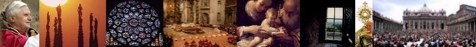

|  | AD Books Ask a Question View Cart Checkout | ||
|
Fr Paul Collins: seeking a new green constituency?
Fr Paul Collins MSC, who was until recently Specialist Editor-Religion for the ABC, has written two previous books, 'Mixed Blessings' and 'No Set Agenda', both critical of the present Papacy. In his latest book, 'God's Earth: Religion as if Matter Really Mattered' (Dove, RRP $19.95), Fr Collins posits a green ("ecological") theology as the best hope in tackling the world's environmental problems. However, one might well ask whether this theology is Catholic, let alone Christian, in any meaningful sense, and even whether he now seeks to forge a new green constituency following his years with the ABC. Fr Paul Collins' latest work is not designed to show how Christian values and principles can contribute to an enhanced appreciation of the wonders of nature. Rather, it seeks to put religion at the service of extreme environmentalism. Today, the people of the world - including Asia - are better fed, better clothed and better educated than at any time in history. The statistics show that as a whole food production per capita is rising, as is life expectancy, family income, and so on. At the same time, greater efforts than ever before are being expended in preserving the natural environment, in Australia and overseas. World Heritage listings and new National Parks multiply by the day. The timber and mining interests encounter increasing government red tape and conservationist opposition. What does Paul Collins say? "Human beings living in a feed-lot world where all wilderness has been destroyed, most species extinguished and nature driven out" (p.4); the "earth ... dying at an ever-quickening rate ..." (p. 13); world resources will be "exhausted" by the year 2100 (p.48); "an environmental holocaust surrounds us" (p. 183). These are the typical themes which the now-discredited author of The Population Bomb, Dr Paul Ehrlich, was putting forward in the late 1960s. Despite being discredited, however, Ehrlich has continued to enjoy easy access to the media, along with others of his viewpoint. Fr Collins views nature as a totally benign force. "How," he asks, "could it possibly be argued that the extinction of whole species, or the partial or total destruction of God's creation, could be in accordance with God's eternal law?" (p.75). Gregg Easterbrook, contributing editor of Newsweek and The Atlantic Monthly, provides a reply: "Nature discards creatures with a pitilessness that makes humanity seem saintly: more than ninety-nine percent of the species ever to come into existence have been rendered extinct. So why does conventional wisdom hold that natural arrangements are metaphysically superior to artificial ones?" (New Republic, 30.4.90). Fr Collins' admiration for the eccentric writings and activities of Matthew Fox (who recently left the Catholic Church) widens the credibility gap. He notes without a trace of embarrassment how Fox assembled a faculty in California including "a Sufi, a Yoruba priestess, a Zen Master, a Lakota Medicine Man and the controversial Starhawk, a Wiccan witch" (p. 164). When Fox describes the Catholic Church as a "maladjusted, addictive family led by an authoritarian, sadomasochistic, sick and deeply psychologically disturbed hierarchy" and the Vatican as a "dysfunctional, and self-deluded organisation...", Collins observes, "personally I could not agree more with his diagnosis" (p.167). Fr Collins' heavy-handed polemics further lower his credibility. Those of a different viewpoint are regularly dismissed as "fear-filled fundamentalists" (p.10, p.33, etc.) while such expressions as "developmental myopia" (p. 2), "narrow orthodoxy" (p.6), "myopic fixation of the official church" (p.78), "crass Western development" (p.83) and the "totalitarian inquisition" of Pope John Paul II and Cardinal Ratzinger (p.168) are scattered throughout the book. At the same time, Collins pontificates in a manner making any medieval Pope seem wimpish: "Modern ecology is absolutely central to the future of religion ..." (p. 3). "Christianity will have to face up to some radical shifts of emphasis in its theology in order to remain in touch with the ecological age" (p. 10); "Sustainable development" is "doomed to failure" (p. 33). Tasmania's green Dr Bob Brown is cited as a worthy candidate for canonisation (p. 8), while the activities of woodchippers (and supporting governments, industries, and trade unions) are judged to be "profoundly sinful" (p.213). His (implied) claim to be in tune with "the true Catholic tradition" (p. 6) is contradicted repeatedly. A few examples of his more questionable theological statements are listed below. Theological statements
Despite, or even because of these kinds of statements, God's Earth is more than likely to find its way onto multitudes of Catholic R.E. booklists. The effect will be twofold. Apart from making no practical difference to the admitted environmental problems, it will further the alienation of young people from the Church and traditional Christianity; and it will further indoctrinate Catholic students into accepting uncritically the specious 'dark greenie' agenda. Reprinted from AD2000 Vol 8 No 7 (August 1995), p. 5 |
| AD2000 Home | Article Index | Bookstore | About Us | Subscribe | Contact Us | Links |
Page design and automation by
Umbria Associates Pty Ltd © 2001-2004